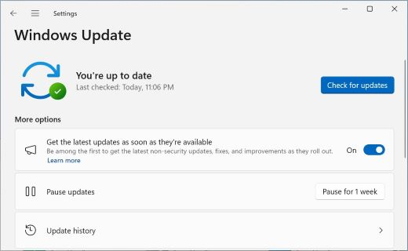
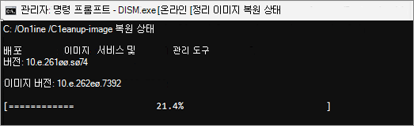

윈도우 업데이트 오류·실패, 공식 확인 10단계
업데이트를 받으려고 했는데 자꾸 같은 자리에서 멈추거나 오류 메시지만 뜨나요? 몇 번을 다시 눌러도 똑같다면 답답하실 거예요.
마이크로소프트 공식 지원 문서는 이럴 때 확인할 순서를 10단계로 안내해요. 이 글에서 다루는 운영체제는 윈도우 11이에요. 영문 정식 표기는 Windows 11이고, 이 글에서는 계속 윈도우 11로 써요.
순서대로 짚어보면 대부분은 화면 조작만으로 풀려요. 이 글은 2026.08.11 기준으로 마이크로소프트 공식 지원 문서를 직접 확인해 정리했어요.
여기서 다루는 건 업데이트 설치 자체가 계속 실패하는 경우예요. 특정 기기에서 나타나는 발열·강제종료 문제는 원인이 달라서 이 글에서는 다루지 않아요.
윈도우 업데이트 오류가 났을 때, 먼저 확인할 5단계는 뭔가요?
마이크로소프트 공식 지원 문서는 문제 해결사 실행부터 캐시 삭제까지 5단계를 먼저 확인하라고 안내해요.
- 문제 해결사 실행 — 설정 → 시스템 → 문제 해결 → 기타 문제 해결사에서 목록의 'Windows 업데이트'를 찾아 실행을 선택해요.
- 인터넷 연결 확인 — 설정 → 네트워크 및 인터넷에서 와이파이나 이더넷 연결 상태를 확인해요.
- 관리자 권한 확인 — 일부 업데이트는 관리자 계정으로 로그인해야 설치가 진행돼요.
- 외장 기기 분리 — USB, 외장 하드, 도크처럼 당장 필요 없는 장치를 빼고 다시 시도해요.
- 업데이트 캐시 지우기 — Windows Update 서비스를 잠깐 멈추고 다운로드 캐시 폴더를 비운 뒤 다시 켜는 방법이에요.
캐시를 지우는 5단계는 순서가 정해져 있어서 따로 풀어서 볼게요.
- Win+R을 눌러 실행 창을 열고 services.msc를 입력한 뒤 Enter를 눌러요.
- 서비스 목록에서 'Windows Update'를 찾아 마우스 오른쪽 버튼으로 클릭하고 중지를 선택해요.
- C:\Windows\SoftwareDistribution 폴더로 이동해요.
- 그 폴더 안의 파일과 폴더를 전부 삭제해요.
- 다시 서비스 창으로 돌아가 'Windows Update'를 오른쪽 클릭하고 시작을 선택해요.
이 폴더는 업데이트 다운로드 캐시일 뿐이에요. 지워도 사진이나 문서 같은 개인 파일에는 영향이 없어요. 다만 시스템 폴더 안이니 SoftwareDistribution 말고 다른 폴더를 실수로 지우지 않게 경로만 정확히 확인해요.
그래도 안 되면 이어서 확인할 5단계는 뭔가요?
6단계부터는 날짜·시간 설정, 드라이버 점검, 저장공간 확보, 업데이트 재시도, 재부팅까지예요.
- 날짜 및 시간 확인 — 설정 → 시간 및 언어 → 날짜 및 시간에서 '시간 자동 설정'과 '표준 시간대 자동 설정'을 켜고, 필요하면 지금 동기화를 눌러요.
- 타사 드라이버 업데이트 — 하드웨어 제조사 공식 홈페이지에서 최신 드라이버가 있는지 확인해요.
- 저장공간 확보 — 32비트 운영체제는 16GB, 64비트 운영체제는 20GB 이상의 여유 공간이 필요해요.
- 업데이트 다시 실행 — 설정 → Windows 업데이트에서 '업데이트 확인'을 눌러요.
- 재부팅 — 시작 메뉴 전원 버튼에서 '업데이트 및 다시 시작' 또는 '업데이트 및 종료'를 선택해요.
공식 지원 문서에는 저장공간 조건이 이렇게 적혀 있어요. "32비트 OS를 업그레이드하려면 16GB 이상의 여유 공간이 필요하거나 64비트 OS의 경우 20GB가 필요합니다." 공간이 모자라면 USB 드라이브를 꽂아 진행하는 방법도 같은 문서에 안내돼 있어요.

설정 > Windows 업데이트 화면이에요. '업데이트 확인' 버튼을 누르면 9단계를 실행할 수 있어요.
이미지 출처: Microsoft 지원 — 장치에서 최신 업데이트 받기 · 네이버 본문엔 받아서 재업로드 권장
오류 코드가 따로 떴다면 어떻게 하나요?
오류 코드가 보이면 공식 문서에 코드별로 정리된 해법이 따로 있어요.
자주 보이는 코드 몇 가지만 정리하면 이래요.
| 오류 코드 | 자주 나타나는 원인 | 확인할 것 |
|---|---|---|
| 0x8007000d | 업데이트 캐시 파일 손상 | 문제 해결사 실행, 5단계 캐시 지우기 |
| 0x800705b4 | 설치 도중 시간 초과·중단 | 인터넷 연결 확인, 재부팅 |
| 0x80070057 | 손상된 파일 또는 잘못된 시스템 구성 | 관리자 권한 명령 프롬프트에서 sfc /scannow |
| 0xC1900101 | 호환되지 않는 드라이버로 인한 실패 | 장치 관리자에서 드라이버 업데이트 후 재시도 |
표에 없는 코드도 있어요. 참고한 곳에 링크한 공식 문서에서 코드로 직접 검색하면 개별 해법을 찾을 수 있어요.
코드 앞의 0x는 16진수 표기라는 뜻이에요. 대문자·소문자는 코드마다 다르니 화면에 뜬 그대로 확인하면 돼요.
10단계로도 안 풀리면 더 해볼 방법이 있나요?
네, 공식 문서에는 명령 프롬프트를 쓰는 고급 방법도 안내돼 있어요.
다만 마이크로소프트도 이 방법은 명령줄 작업이 낯설지 않은 사용자에게만 권해요. 명령어 실행법을 모른다면 굳이 여기까지 따라 하지 않아도 괜찮아요.
10단계까지 다 확인했다면 이미 웬만한 원인은 짚어본 셈이에요. 이 방법들은 그다음에 시도하는 여분의 선택지로 보면 돼요.
- 소프트웨어 배포 폴더 이름 바꾸기 — 서비스 두 개를 잠깐 멈추고 SoftwareDistribution 폴더 이름을 바꾸는 방법이에요.
- 하드 드라이브 오류 복구 — chkdsk 명령으로 드라이브 상태를 점검하는 방법이에요.
- 시스템 파일 복원 — DISM과 sfc 명령을 차례로 실행해 손상된 시스템 파일을 되돌리는 방법이에요.
이 방법들은 전부 관리자 권한 명령 프롬프트에서 실행해요. 정확한 명령어와 순서는 참고한 곳에 링크한 공식 문서에 나와 있어요.

공식 문서에 실린 DISM 복원 명령 실행 화면 예시예요. 진행률이 표시되면서 시스템 파일을 점검·복원해요.
이미지 출처: Microsoft 지원 — Windows 업데이트 오류 수정 · 네이버 본문엔 받아서 재업로드 권장
자주 묻는 질문
Q. 캐시를 지우면 사진이나 문서도 같이 지워지나요?
아니요. SoftwareDistribution 폴더는 업데이트 다운로드 캐시일 뿐이라 개인 파일에는 영향이 없어요.
Q. 표에 없는 오류 코드가 뜨면 못 고치나요?
아니요. 공식 문서에서 코드를 직접 검색하면 그 코드에 맞는 개별 해법을 찾을 수 있어요.
Q. 명령 프롬프트를 꼭 써야 문제가 풀리나요?
아니요. 대부분은 1~10단계의 화면 조작만으로 해결돼요. 명령줄은 그래도 안 풀릴 때 살펴보는 추가 방법이에요.
참고한 곳
· Microsoft 지원 — Windows 업데이트 오류 수정
하루 정리
· 업데이트가 자꾸 실패하면 공식 문서 기준 10단계를 순서대로 확인해요.
· 1~5단계는 문제 해결사, 인터넷 연결, 관리자 권한, 외장 기기, 캐시 지우기예요.
· 6~10단계는 날짜·시간, 드라이버, 저장공간(32비트 16GB·64비트 20GB), 업데이트 재시도, 재부팅이에요.
그래도 안 풀리면 오류 코드를 확인하거나 명령줄 고급 방법을 살펴보되, 명령줄이 낯설면 건너뛰어도 괜찮아요.